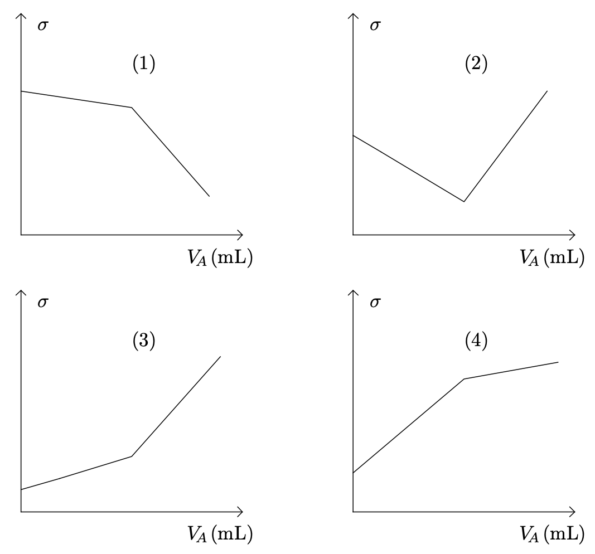
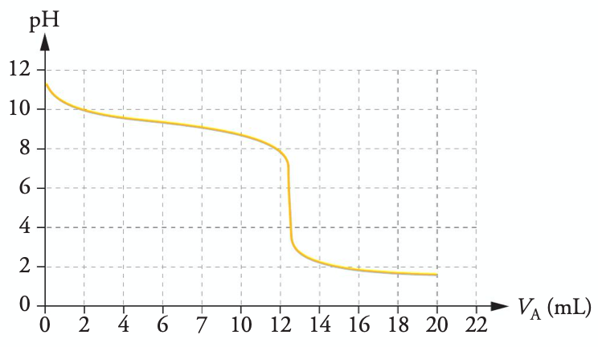
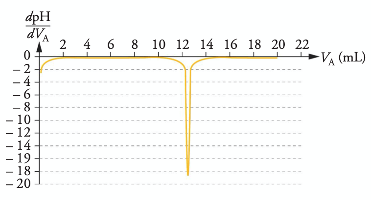

L’ammoniac $\ce{NH3}$ est un gaz qui, dissous dans l’eau, donne une solution basique d’ammoniaque. Des solutions d’ammoniaque sont vendues dans le commerce. Ces solutions, après dilution, sont utilisées comme produit nettoyant et détachant.
L’ammoniac, une base
On prélève un volume gazeux d’ammoniac $V = \pu{2,4e–1 L}$, sous la pression $\pu{1 015 hPa}$ à la température de $\pu{20 °C}$, que l’on dissout dans de l’eau distillée pour obtenir $V_{S1} = \pu{1,0 L}$ de solution aqueuse d’ammoniac $S_1$.
Le pH de la solution $S_1$ est mesuré et a pour valeur 10,6.
Données
- Volume molaire : $V_m = \pu{24,1 L.mol–1}$.
- Produit ionique de l’eau : $K_e = [\ce{H3O^+}] \cdot [\ce{HO^-}] = \pu{1,0e–14}$.
- Numéros atomiques : azote $\ce{N}$, $Z = 7$ ; hydrogène $\ce{H}$, $Z = 1$.
-
Rappeler la définition d’une base selon Brönsted.
-
Écrire l’équation de la réaction de l’ammoniac avec l’eau.
Identifier les couples acide-base qui interviennent. -
Donner le schéma de Lewis de l’ammoniac. Comment expliquer son caractère basique ?
-
Montrer que la concentration en quantité de matière de la solution d’ammoniaque préparée $S_1$ est $C_1 = \pu{1,0e–2 mol.L–1}$.
-
La transformation chimique est-elle totale ? Justifier la réponse.
Dilution d’une solution commerciale d’ammoniaque
Un laborantin retrouve dans une armoire une bouteille qui semble assez ancienne d’un produit ménager d’une solution commerciale d’ammoniaque. Sur l’étiquette, on lit « titre massique 12 % ».
Données
- Densité de la solution commerciale : $d = 0,923$.
- Masse molaire de l’ammoniac : $M(\ce{NH3}) = \pu{17 g.mol–1}$.
-
Déterminer la concentration en masse de la solution commerciale d’après l’indication de l’étiquette.
-
Le laborantin prépare une solution $S$ diluée au 50ème de la solution commerciale. Indiquer le protocole suivi par le laborantin, ainsi que le matériel nécessaire pour la réalisation de $\pu{500 mL}$ de cette solution.
Titrages conductimétrique et pH-métrique
Le laborantin souhaite réaliser un suivi conductimétrique en titrant $\pu{10,0 mL}$ de la solution commerciale d’ammoniaque diluée 50 fois, mélangée à $\pu{200 mL}$ d’eau distillée, par une solution d’acide chlorhydrique $(\ce{H3O^+(aq) + Cl^–(aq)})$ de concentration $C_A = \pu{1,00e–1 mol.L–1}$.
-
Quelles sont les caractéristiques d’une réaction support d’un titrage ?
-
Écrire l’équation de la réaction support du titrage et identifier les deux couples acide-base mis en jeu.
-
Quel est l’intérêt d’ajouter $\pu{200 mL}$ d’eau aux $\pu{10,0 mL}$ de solution à titrer ?
-
Parmi les représentations graphiques de la page suivante, quelle est celle qui représente l’allure de l’évolution de la conductivité $\sigma$ du mélange en fonction du volume $V_A$ de solution d’acide chlorhydrique versé ?
Faire un choix et rédiger une réponse en justifiant. 
Données
- Conductivités molaires ioniques à $\pu{25 °C}$ :
| Ion | $\ce{H3O^+}$ | $\ce{HO^–}$ | $\ce{Cl^−}$ | $\ce{NH4^+}$ |
|---|---|---|---|---|
| $\lambda°(\pu{mS.m2.mol–1})$ | 34,98 | 19,86 | 7,63 | 7,35 |
- À partir de la solution notée $S$ diluée 50 fois de la solution commerciale d’ammoniaque, le laborantin réalise finalement un titrage pH-métrique de $\pu{10,0 mL}$ de solution $S$ par une solution d’acide chlorhydrique $(\ce{H3O^+(aq) + Cl^–(aq)})$ de concentration $C_A = \pu{1,00e–1 mol.L–1}$. Il obtient les deux courbes ci-après.
Exploiter le titrage et déterminer la concentration en quantité de matière en ammoniac de la solution commerciale. Détailler votre démarche.
 
-
Déterminer le titre massique d’ammoniac $(t)$ de la solution commerciale.
-
L’indication de l’étiquette est-elle toujours valable ? Le produit s’est-il conservé ?